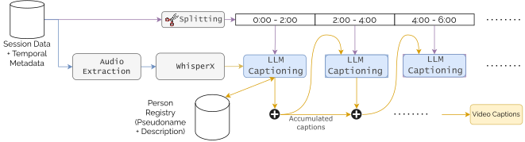
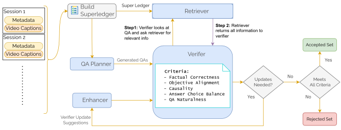
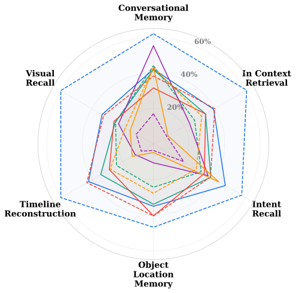
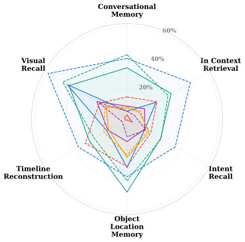
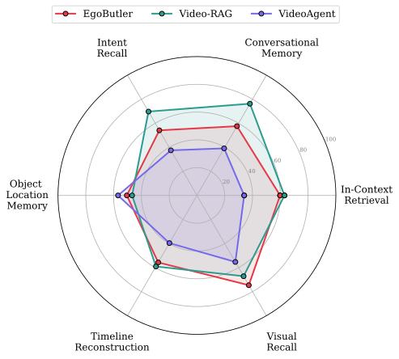
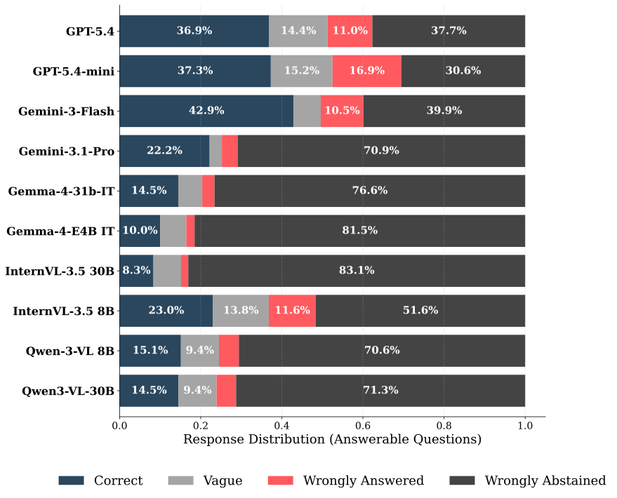
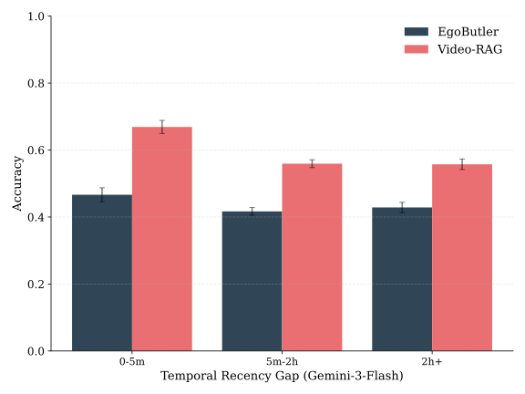
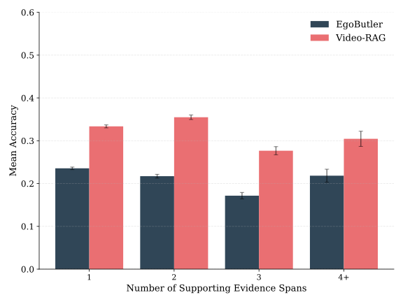
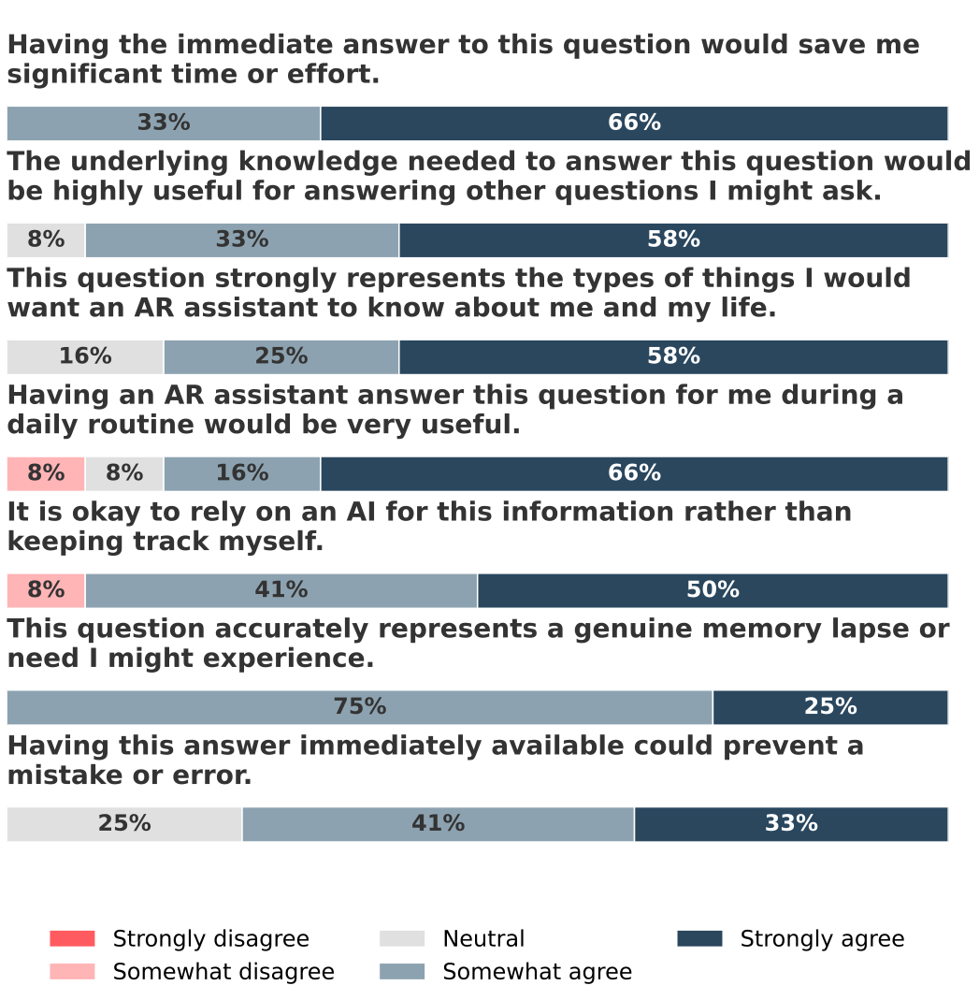

Augmented reality glasses present a compelling platform for AI agents to serve as personalized memory
assistants. SuperMemory-VQA evaluates whether such systems can answer realistic memory questions from long,
multimodal egocentric recordings rather than short isolated clips.
The dataset contains 52.9 hours of everyday activities recorded with AR glasses, including synchronized
RGB video, audio transcription, eye gaze, IMU, and SLAM trajectories. A human-verified annotation pipeline yields
4,853 grounded question-answer pairs spanning object and location memory, intent recall, visual scene
recall, timeline reconstruction, conversational memory, and in-context retrieval.
0hours of egocentric data
0participants
0question-answer pairs
0memory task categories
Introduction
The integration of AI agents into AI glasses represents a transformative leap in personal computing. By
continuously observing a user's daily life, these agents have the potential to act as personalized memory systems
— helping users locate misplaced items, revisit conversations, and piece together past events. Delivering
genuine utility, however, requires moving beyond short-term visual understanding to systems that process
continuous, multimodal sensor streams over extended periods and answer natural questions rooted in real human
memory gaps.
Progress is currently hindered on two fronts. On the modeling side, even models with million-token context
windows degrade over long inputs and suffer from the “lost in the middle” effect, and
retrieval-augmented generation often fails at compositional, multi-hop reasoning over vast temporal gaps. On the
evaluation side, existing egocentric datasets predominantly target action recognition or generic QA from short
clips, measuring perceptual capability rather than realistic memory needs. The closest prior work, EgoLife,
introduced week-long egocentric data but does not systematically evaluate whether systems can answer natural,
user-centered memory questions across multi-session recordings.
SuperMemory-VQA fills this gap. It is built around questions people would realistically ask an AI memory
assistant, grounded in recordings that capture synchronized RGB video, spatial audio, eye gaze, IMU, and SLAM
trajectories. Benchmarking state-of-the-art agentic frameworks and leading vision-language models reveals that
current systems remain far from reliable: they struggle with answerability detection, long temporal gaps, and
integrating evidence across multiple moments.
Dataset
SuperMemory-VQA contains 52.9 hours of egocentric recordings of everyday activities, collected from ten
participants wearing Gen 1 Meta Aria glasses. The recordings are multimodal: egocentric RGB video
(1408×1408, 30fps), dual SLAM streams (640×480, 30fps), eye-tracking (320×240, 60fps), and
7-channel audio (48kHz). Participants recorded indoors and outdoors following generic scripts — cooking a
recipe, playing board games, doing chores, and having conversations. Each participant contributed 3–12 hours
across multiple sessions, with three participants recording across multiple days (up to two weeks).
Alongside the recordings, SuperMemory-VQA provides 4,853 question-answer pairs that reflect what a user would
actually want to remember for practical, personal, or social purposes. Each question is posed as a multiple-choice
item with ordered answer choices — accurate, vague, incorrect, and an explicit unanswerable option — so
that safe abstention can be distinguished from confident hallucination.
What sets SuperMemory-VQA apart
Natural phrasing
Conversational, context-dependent queries rather than templates, forcing models to infer user intent and
temporal reference.
Long-horizon context
Questions grounded in recordings lasting hours and sometimes spanning days, exceeding the practical context
limits of current VLMs.
Dense multi-evidence retrieval
Many questions link sparse evidence across disjoint moments — e.g. a spoken plan and a later action
— demanding retrieval and temporal abstraction.
Grounded multimodal reasoning
Aligns video, audio, gaze, motion, and spatial context to track actions, object states, and intent over
time.
Epistemic calibration
Ordered answer choices (correct > vague > wrong > unanswerable) test whether models avoid
confident hallucination when evidence is missing.
The six memory task categories
Object & Location Memory
Recover the last known location and trajectory of objects across time and rooms.
Conversational Memory
Recall spoken facts, commitments, deferred answers, and mid-conversation corrections.
Visual Scene Recall
Retrieve visual details such as text, screens, ingredients, manuals, and scene contents.
In-Context Retrieval
Combine current context with earlier facts and associations in the recording history.
Timeline Reconstruction
Sequence events chronologically and reason over how actions unfolded.
Intent Recall
Recover stated or implied goals, reminders, and intended future actions.
Comparison to existing egocentric benchmarks
Prior egocentric datasets emphasize action recognition, general video comprehension, or generic template-based
QA. SuperMemory-VQA instead targets longitudinal, multi-session memory with natural phrasing, multi-evidence
questions (34% require more than one supporting clip), and ordered multiple-choice answers with time spans.
Dataset
Focus
Hrs
Context
QAs
Multi-evidence
Natural
EPIC-KITCHENS-100
Action rec.
100
~8.5m
—
—
No
Ego4D
Ego activities
3,670
~23m
—
—
No
EgoSchema
Long video QA
>250
3m
5,063
Single
No
HoloAssist
Assistance
166
~5–10m
—
—
No
AEA
Spatial
>7.5
~5m
—
—
N/A
Nymeria
Motion
300
~15m
—
—
N/A
EgoLife
Life assistant
300
>1h
6,000
Limited
No
SuperMemory-VQA (Ours)
SuperMemory
52.9
>1h
4,853
34%
Yes
Multi-evidence means a question requires more than one supporting timestamp or clip. The closest prior
work, EgoLife, spans a week but still lacks realistic, practical queries for human memory assistance.
Annotation Pipeline
To scale generation while preserving fidelity, SuperMemory-VQA is built with an automated, agentic pipeline of
specialized LLM agents structured into two phases, each followed by human review.

Phase 1: dense video captioning and evidence discovery.

Phase 2: agentic QA generation, verification, and refinement.
Phase 1 · Dense Video Captioning
Session videos are split into short chunks to fit context limits. Audio across all of a participant's
sessions is transcribed with WhisperX, and an LLM captioning agent processes each chunk with the
transcription, a Person Registry of pseudonymized individuals, and previously accumulated captions. It
extracts dense descriptions of visual actions, detected objects, auditory events, and conversation
summaries, which are temporally aggregated into consolidated session captions and checked by human review.
Phase 2 · Agentic QA Generation
A Build Super Ledger step aggregates metadata and captions from all sessions into a unified ledger. A
QA Planner proposes diverse, task-targeted question-answer pairs using a rationale-first,
chain-of-thought schema. A closed loop of Verifier, Retriever, and Enhancer agents then
grounds, scores, and iteratively refines each pair before a final human review yields the benchmark.
Closed-loop verification criteria
1Factual correctness. The answer is grounded in the recorded
data, confirmed by the Retriever against the Super Ledger.
2Objective alignment. The pair fits a target memory task and the
temporal gap is large enough to justify a plausible memory lapse.
3Causality. The question is answerable using only data recorded
before the question time.
4Answer-choice balance. The answer cannot be inferred from the
question and choices alone, without the evidence.
5QA naturalness. The question is practical and naturally worded,
like something a user would actually ask.
The QA Planner and Verifier use Gemini-3.1-Pro; the captioning, retrieval, and enhancer agents use
Gemini-3-Flash. Pairs the Verifier cannot validate are routed to a rejected set; approved pairs pass a
final human review.
Experimental Setup
We evaluate two state-of-the-art frameworks for long-form video understanding, each illustrating a distinct
strategy for managing long-horizon context, paired with a diverse set of open- and closed-source VLMs. To enforce
causality, every system receives the question and four answer choices over only the video preceding the question
time.
Video-RAG
A training-free, single-turn retrieval-augmented framework that augments a VLM with auxiliary text from the
source video. Three databases are precomputed per session — ASR transcripts (WhisperX), OCR text
(EasyOCR), and object detections on CLIP-selected keyframes (APE). At inference the VLM decomposes the query,
each database is queried via FAISS over Contriever embeddings, and retrieved text is concatenated with 32
sampled frames.
EgoButler
Proposed alongside EgoLife and the closest in spirit to SuperMemory-VQA, EgoButler pairs EgoGPT (an
omni-modal captioner) with EgoRAG, which recursively summarizes dense visual–audio captions into
hour- and day-level digests to form a hierarchical memory bank. At query time it performs coarse-to-fine
temporal localization, retrieving summaries first, then narrowing to clips.
Vision-language models
Each framework is evaluated with the same backbones:
F1 of the binary decision of whether a question is answerable from the available evidence, or should
receive the unanswerable option.
QA-Acc
Four-way multiple-choice accuracy: only the ground-truth correct option earns credit; vague, wrong, and
incorrect abstention count as wrong.
QA-MRR
Mean reciprocal rank from the model's ordered scores, rewarding ranking the correct answer above vague,
wrong, and unsupported alternatives.
Benchmarking Results
Even the strongest configuration, Gemini-3-Flash with Video-RAG, reaches only 61.0% QA accuracy despite 83.9%
Ans-F1 and 76.0% QA-MRR. That gap shows that detecting answerability is only the first hurdle: models must also
retrieve the precise multimodal evidence, interpret it, distinguish the correct answer from plausible distractors,
and abstain only when evidence is insufficient. Averaged across models, Video-RAG outperforms EgoButler, lifting
Ans-F1 from 51.5% to 70.5%, QA-Acc from 41.4% to 46.6%, and QA-MRR from 62.8% to 66.4%.
🏆 Model Rankings
Answerability, accuracy, and ranking across two retrieval pipelines
How to read the scores: all metrics are reported on a 0–100 scale (higher is better). Rankings are by
Video-RAG accuracy by default — click any column header to re-sort.
Models:
Metric Key
Ans-F1 Answerability F1 — detecting whether
a question is answerable.
Acc. Accuracy — correct answer selection.
MRR Mean Reciprocal Rank of the correct answer.
Model
VR Ans-F1
VR Acc.
VR MRR
EB Ans-F1
EB Acc.
EB MRR
VR = Video-RAG pipeline, EB = EgoButler pipeline. Best value in each column is highlighted.
Analysis
Video-RAG yields more balanced task coverage than EgoButler, especially for tasks that link evidence across time.
Reliability failures are dominated by excessive abstention — even Gemini-3-Flash answers correctly on only
42.9% of answerable questions and wrongly abstains on 39.9%.
Key findings
1Structured retrieval helps most. Video-RAG beats EgoButler on
most metrics, with its largest gain in Ans-F1 (51.5% → 70.5%) — retrieval-augmented evidence is
especially useful for deciding whether a question is grounded in the recorded memory.
2Closed-source is stronger, but size is not destiny. Closed
models average 76.8% Ans-F1 / 53.6% QA-Acc under Video-RAG vs. 66.4% / 41.9% for open models, yet
performance is not monotonic with scale — Gemini-3-Flash beats Gemini-3.1-Pro on every Video-RAG
metric.
3Larger models can collapse on the wrong format. InternVL-3.5
30B drops to 28.5% Ans-F1 under EgoButler (vs. 61.4% for the 8B), failing to exploit its caption-based
memory format.
4Excessive abstention dominates failures. The main error on
answerable questions is abstaining when evidence is present; several open models wrongly abstain on more
than 70% of answerable cases.
5The Ans-F1 / accuracy gap is the open challenge. Detecting
answerability is only the first hurdle; coupling long-horizon retrieval with grounded reasoning to actually
select the correct answer remains unsolved.
Task-category breakdowns

Video-RAG: task-category breakdown across model families.

EgoButler: task-category breakdown across model families.
Agentic frameworks compared

EgoButler, Video-RAG, and VideoAgent (Gemini-3-Flash) across the six task categories. VideoAgent
underperforms both baselines despite far higher token and compute cost.

Response reliability on answerable questions — failures are dominated by excessive
abstention rather than wrong answers.
Long-horizon difficulty

Temporal robustness: performance vs. the time gap between the query and its supporting evidence.

Complexity scaling: performance as questions require more pieces of supporting evidence.
Participant Survey
Eight participants reviewed 18 questions generated from their own recordings and rated seven statements about
question quality and utility. Responses were strongly positive, with no disagreement across statements.
86% agreed the questions captured genuine memory lapses, 82% found the answers useful during
daily routines, and 78% agreed the underlying knowledge would also help answer future questions.

Survey responses for QA quality (Likert).
Citation
@misc{alam2026supermemoryvqa,
title = {SuperMemory-VQA: An Egocentric Visual Question-Answering Benchmark for Long-Horizon Memory},
author = {Alam, Samiul and Siam, Shakhrul Iman and Proulx, Michael J. and Fort, James and Newcombe, Richard and Kim, Hyo Jin and Zhang, Mi},
year = {2026},
eprint = {2606.00825},
archivePrefix = {arXiv},
primaryClass = {cs.CV},
url = {https://arxiv.org/abs/2606.00825}
}